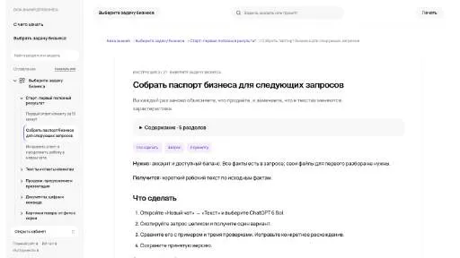
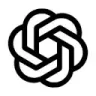

МолекулаАгрегаторы нейросетей
Молекула объединяет модели для текстов, изображений, видео и музыки. В одном аккаунте можно подобрать инструмент под этап работы, сохранить инструкции проекта и использовать готовые роли.
К задаче в МолекулеРаздел «ИИ-ассистент»: варианты ИИ для этой задачи, описания возможностей и переходы к обзорам. Сравните несколько решений на одинаковом примере.
Перед началом задачи соберите цель, исходный материал и критерий готовности. Молекула поможет оформить задание; доступ к вашим системам и выполнение действий требуют отдельной настройки.
Помоги составить бриф на подготовку инструкции сотруднику: исходный регламент ниже, читатель новичок, результат до одной страницы. Укажи необходимые уточнения и критерии проверки текста.

Молекула объединяет модели для текстов, изображений, видео и музыки. В одном аккаунте можно подобрать инструмент под этап работы, сохранить инструкции проекта и использовать готовые роли.
К задаче в Молекуле«AgentRunner AI» даёт средства для сборки ИИ-агента.
«AI brain bank» представлен в разделе «ИИ-ассистент». При выборе проверьте нужную операцию и условия работы с результатом.
«AiAgent.app» даёт средства для сборки ИИ-агента.
Сравнивать «AlphaCorp AI» с другими инструментами раздела «ИИ-ассистент» удобнее на одинаковом исходном материале.
«AnyGen AI» помогает организовать разговор с чат-ботом.
«Chatgot» представлен в разделе «Чат-боты и ассистенты». При выборе проверьте нужную операцию и условия работы с результатом.
«ChatGPT Buddy» предлагает чат-помощника для общения в WhatsApp.
ChatINFO предоставляет разговорный интерфейс и средства генерации текстов прямо в браузере. Среди задач есть статьи и сочинения, рерайт и проверка написания. Помощь с кодом и творческими материалами дополняет набор инструментов российского сервиса для работы с письменным содержанием пользователя.
«CodeWP AI» связан с рабочими процессами WordPress.
«CODIO» помогает готовить изменения программного кода.
«Cosmic Whisper AI» представлен в разделе «Чат-боты и ассистенты». При выборе проверьте нужную операцию и условия работы с результатом.
Сравнивать «Cosmos AI» с другими инструментами раздела «ИИ-ассистент» удобнее на одинаковом исходном материале.
«Just Think AI» получает речевую запись из текста.
«KAI - KeyboardAI» представлен в разделе «Продуктивность». При выборе проверьте нужную операцию и условия работы с результатом.
Сравнивать «Lamini» с другими инструментами раздела «ИИ-ассистент» удобнее на одинаковом исходном материале.
Mano AI помогает организовывать повседневные задачи с использованием ChatGPT. Инструмент предоставляет подсказки и действия, которые дополняют автоматизацию работы. Пользователь обращается к этим средствам при рассмотрении своих текущих задач, связывая подготовленный запрос и выбранный способ дальнейшего выполнения в рамках помощника.
Сравнивать «NOLU» с другими инструментами раздела «Чат-боты и ассистенты» удобнее на одинаковом исходном материале.
Для «R2 Copilot» сначала определите свою задачу и требуемый результат. Карточка относится к направлению «Чат-боты и ассистенты».
«Reka Core» представлен в разделе «ИИ-ассистент». При выборе проверьте нужную операцию и условия работы с результатом.
Сравнивать «Second Brain» с другими инструментами раздела «ИИ-ассистент» удобнее на одинаковом исходном материале.
Сравнивать «Simpler AI» с другими инструментами раздела «ИИ-ассистент» удобнее на одинаковом исходном материале.
«Театр Инсайтов» представлен в разделе «ИИ-ассистент». При выборе проверьте нужную операцию и условия работы с результатом.
Сравнивать «2slash AI» с другими инструментами раздела «ИИ-ассистент» удобнее на одинаковом исходном материале.
Для «Amoura AI» сначала определите свою задачу и требуемый результат. Карточка относится к направлению «Чат-боты и ассистенты».
«Atua» представлен в разделе «Продуктивность». При выборе проверьте нужную операцию и условия работы с результатом.
Сравнивать «Chai» с другими инструментами раздела «Чат-боты и ассистенты» удобнее на одинаковом исходном материале.

ChatGPT помогает писать и редактировать тексты, разбирать документы и таблицы, обсуждать код. Поиск, анализ данных и работа с изображениями дополняют чат, когда доступны в выбранном аккаунте.
«ChatGPT Mail Responder» представлен в разделе «Продуктивность». При выборе проверьте нужную операцию и условия работы с результатом.
«DiscordPal» представлен в разделе «ИИ-ассистент». При выборе проверьте нужную операцию и условия работы с результатом.
Сравнивать «Fig AI» с другими инструментами раздела «ИИ-ассистент» удобнее на одинаковом исходном материале.
«Finetuned Stable Diffusion» готовит текстовый черновик по условиям задачи.
«Fly AI» представлен в разделе «ИИ-ассистент». При выборе проверьте нужную операцию и условия работы с результатом.
«FronTech Atlas» представлен в разделе «Бизнес». При выборе проверьте нужную операцию и условия работы с результатом.
«Gemini Pro 1.5» представлен в разделе «ИИ-ассистент». При выборе проверьте нужную операцию и условия работы с результатом.
«Godly» представлен в разделе «ИИ-ассистент». При выборе проверьте нужную операцию и условия работы с результатом.
Для «GoGPT» сначала определите свою задачу и требуемый результат. Карточка относится к направлению «Генерация изображений».
«GPT-4» представлен в разделе «Чат-боты и ассистенты». При выборе проверьте нужную операцию и условия работы с результатом.
Для «Gravity» сначала определите свою задачу и требуемый результат. Карточка относится к направлению «ИИ-ассистент».
Khanmigo рассчитан на задачи, где нужно готовить текст по теме и требованиям к содержанию. Ещё одно направление работы: готовить учебный материал и объяснения.
Для «KindlLM» сначала определите свою задачу и требуемый результат. Карточка относится к направлению «Чат-боты и ассистенты».
Сравнивать «MacrosAI» с другими инструментами раздела «ИИ-ассистент» удобнее на одинаковом исходном материале.
«MageAI» представлен в разделе «Чат-боты и ассистенты». При выборе проверьте нужную операцию и условия работы с результатом.
Magic Mate объединяет общение с ИИ и обработку творческого материала. Предусмотрены рисование, восстановление цветов картинки, словесная редактура и перевод аудио. Через подключение WhatsApp эти сценарии доступны в окружении мессенджера; помощник сочетает текстовые, визуальные и звуковые задачи в одном продукте.
«mancer» готовит текстовый черновик по условиям задачи.
Microsoft Copilot помогает обсуждать вопросы и готовить рабочие материалы. Личный помощник, Copilot в приложениях Microsoft 365 и средства разработки имеют разные условия и способы доступа к данным.
Сравнивать «MomentoAI» с другими инструментами раздела «ИИ-ассистент» удобнее на одинаковом исходном материале.
Page Assist for Ollama добавляет к Chrome интерфейс работы с локальными моделями ИИ. Расширение использует боковую панель, чтобы обращаться к модели во время просмотра страницы. В описании также указана поддержка моделей с визуальными возможностями для работы с соответствующим материалом браузера.
Страница 1 из 7
Для знакомства с ИИ-ассистентом возьмите одну повторяющуюся задачу. Например, сотруднику нужно отвечать на вопросы о занятиях в учебном центре. У него есть расписание, правила записи и перечень того, что требует согласования. Полезный результат здесь определяется точностью сведений и понятным следующим шагом для собеседника.
Подготовьте несколько обезличенных обращений и короткую памятку центра. Отделите действующие условия от черновиков. В запросе попросите использовать сведения из памятки, не обещать свободное место и возвращать уточняющий вопрос, когда не хватает возраста ученика или желаемой даты. Формат ответа лучше задать сразу: короткое приветствие, информация по существу и дальнейшее действие.
В ChatGPT можно подготовить черновик и последовательно уточнять его в диалоге. Алиса AI также подходит для письменного задания с переданными условиями. При сравнении используйте одинаковый текст обращения; разница в исходном материале мешает понять, какой ответ действительно удобнее.
Проверьте номер телефона, время занятий и границы обещаний. Ответ «место за вами закреплено» непригоден, если ассистент только подготовил текст и не менял запись. Включите пример с противоречивыми сведениями: одна дата в вопросе, другая в памятке. Хороший рабочий процесс должен привести к уточнению, а не к незаметному выбору одного значения.
Затем оцените длину и тон. Сотруднику нужен ответ, который можно прочитать целиком перед отправкой. Слишком пространный текст увеличивает риск пропустить неверное условие. Отдельно проверьте, сохранилась ли оговорка после просьбы сделать сообщение короче. Сокращение не должно превращать предварительную информацию в окончательное решение.
Сохраните бриф, несколько подходящих примеров и перечень запрещённых обещаний. Это позволит другому сотруднику повторить работу без догадок. Если требуется автоматическая отправка ответов, понадобится отдельное подключение и контроль действий; возможности обычного чата не доказывают готовность такой интеграции. Для этого полезно дополнительно изучить API и интеграции.